Префектура Коти · город Коти и посёлок Тоса · застолье и сакэ
Окяку: застолье по-тосски, где гость главнее всех
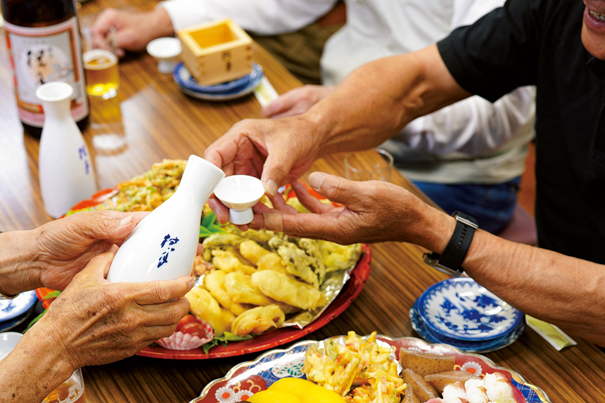
В Коти любят застолья так, что слово «гость» стало их именем. Окяку, тосское застолье, собирает за огромными блюдами сявати-рёри незнакомых людей, и после первого вечера они уже не незнакомые.
Культура
Застолье, названное именем гостя
Коти слывёт самой застольной префектурой страны. Исторические правители Тосы славились способностью выпить, и репутация прилипла ко всему краю; особенно этим отличался Ёдо Ямаути (1827–1872), один из последних правителей княжества Тоса, который в 1867 году убедил сёгуна вернуть власть императору. Кто любит сакэ, тот любит и стол, за которым его пьют: самое яркое выражение этого нрава и называют «окяку».
Слово пришло из быта: так звали гостя, ради которого открывали застолье, а со временем имя перешло на сам праздник. Окяку устраивают на свадьбах и похоронах, на праздниках и памятных датах. Его непременная часть, сявати-рёри, это огромные подносы, на которых рядом живут сашими и суши, варёные и заправленные блюда, сладости и фрукты. Всю подготовку заканчивают заранее, до прихода гостей: никто не носит подносы, никто не прислуживает, все с первой минуты сидят за одним столом. Дальше каждый берёт что хочет и сколько хочет, то есть то, что сегодня назвали бы буфетом, только придумали это в Тосе задолго до слова «буфет».
К окяку дома держали наготове целое хозяйство: большие блюда, стопки маленьких тарелочек, графины-токкури и чашки-очоко в количестве, которого хватит на всех. И гостевые футоны, если застолье затянется до глубокой ночи, а в этой префектуре оно затягивается. За общим блюдом разговор идёт просто и громко: через час за столом уже нет ни должностей, ни возрастов, одна компания.
Рёкан
Бэку-дзакэ: правила игры, в которой проигрывают весело
Как сделать застолье ещё веселее, в Коти думали веками, и настольные игры за сакэ стали обязательной частью окяку. Самая знаменитая, бэку-дзакэ, играется чашками в виде масок: длинноносого тэнгу, смешного хёттоко и улыбчивой окамэ. На столе крутят волчок с рисунками, и выпавшая маска определяет, из какой чашки пить. Самой большой чашке тэнгу радуются все, кроме того, кому она выпала. Есть у игры и правило штрафа: три ошибки подряд, и тэнгу придётся осушить до дна. Хорошая реакция на это, подсказывают местные, тосский возглас «тамару ка», что-то вроде «ну и ну!».
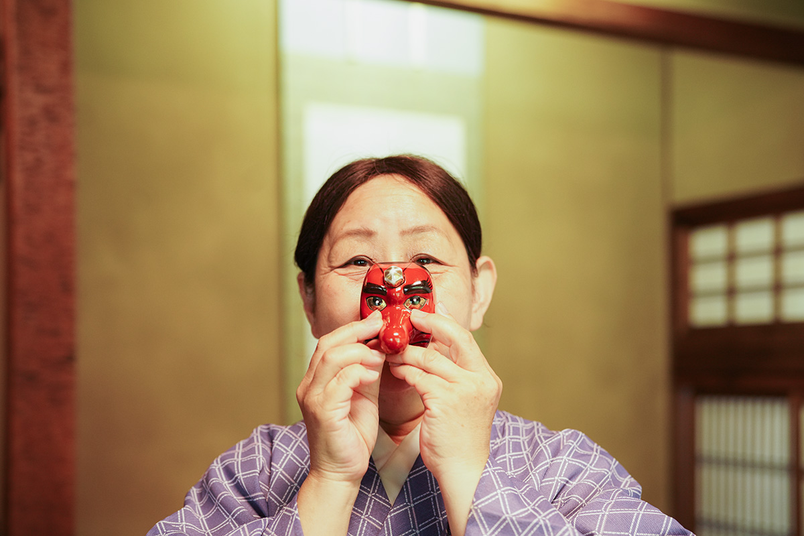
Проще и азартнее игра «хаси-кэн»: противники прячут в кулаке несколько палочек и угадывают общее число. По одной из версий, в Тосу её привёз Рёма Сакамото (1836–1867), самурай из Тосы и один из национальных героев Японии, познакомившийся с похожей забавой «нанко-кэн» во время свадебного путешествия в Кагосиму. Есть и «кику-но хана», «хризантема»: перевёрнутые чашки переворачивают по одной, и тот, под кем окажется цветок, пьёт. Кто не пьёт совсем, тот не пропустит праздник: окяку с честью работает и на безалкогольных напитках.
Лучшее место, чтобы попробовать все игры сразу, старый рёкан «Токугэцуро». Он открылся в 1870 году в увеселительном квартале города и носил титул «первая таверна западной Японии»; роман Томико Мияо «Ёкиро» писал по его следам. В собрании рёкана много каллиграфии и живописи мастеров прошлых веков, а из отдельного павильона в японском стиле открывается сад, разбитый знаменитым садовником конца эпохи Эдо. Кухня держит марку тосской: горы и море в изобилии, размах и точность одновременно. Сявати-рёри готовят от двух человек, заказывают как минимум за день; настольные игры включают по отдельной просьбе.
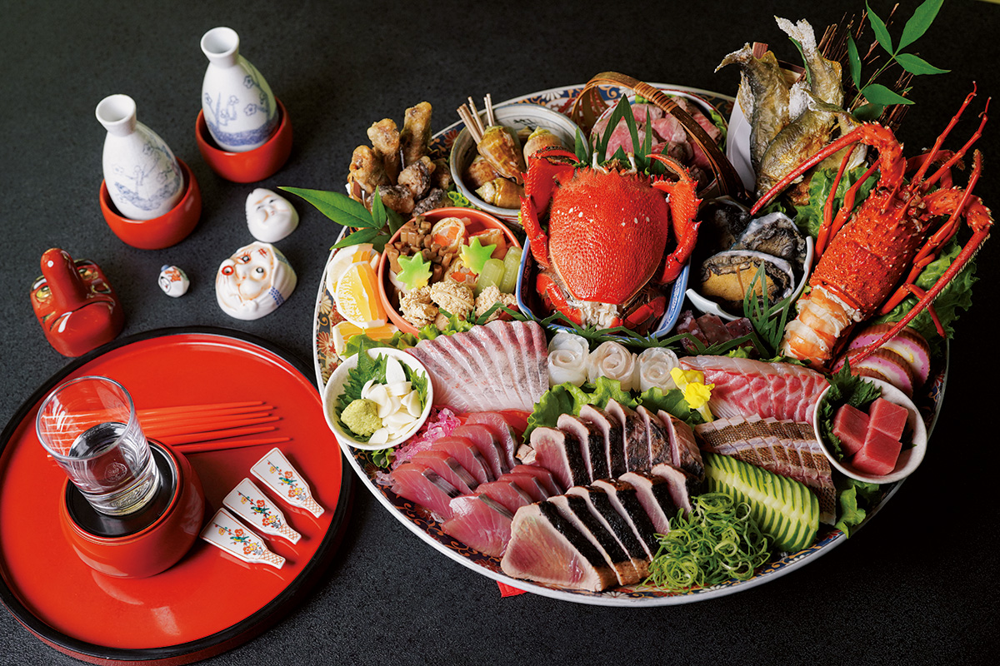
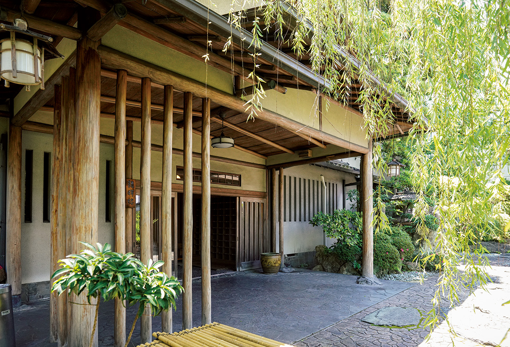
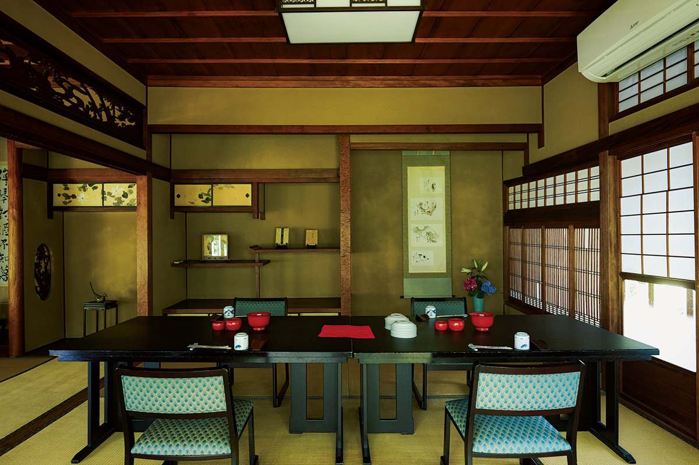
Токугэцуро
- Адрес
- префектура Коти, город Коти, Минами-Харимаятё, 1-17-3
- Телефон
- +81 88-882-0101
- Часы работы
- 11:00–14:00 (последний заказ 13:30), 17:00–22:00
- Выходные
- понедельник (если понедельник праздничный, закрыт в среду)
- Сайт
- tokugetsu.co.jp
Деревня
Окяку в старой школе
Более бытовой вариант окяку ждёт в посёлке Тоса, в самом центре Сикоку. Бывшая начальная школа «Исихара», обучавшая детей до 2009 года, теперь общинный центр «Исихара-но сато», и местные тётушки и дядюшки устраивают в старых классах застолье для гостей. Сявати здесь горное: вместо рыбы деревенские суши с бамбуковыми побегами, конняку и юдзу, обжаренные побеги горца итадори, соленья. Наливают сакэ, которое посёлок любит годами. В знакомых школьных стенах появляется странное чувство: ты здесь впервые, а будто вернулся в родное село.
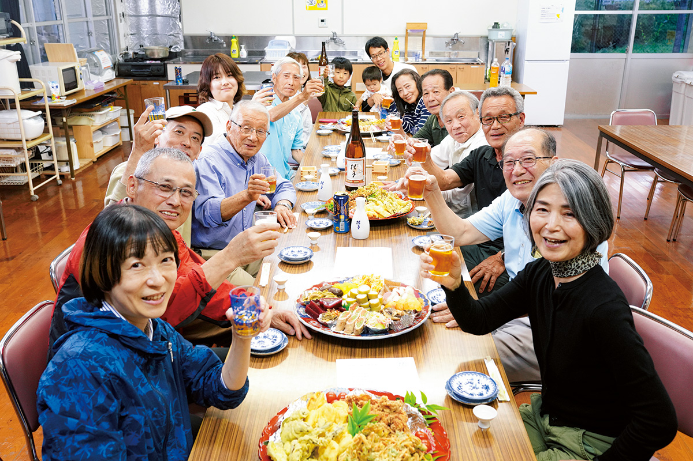
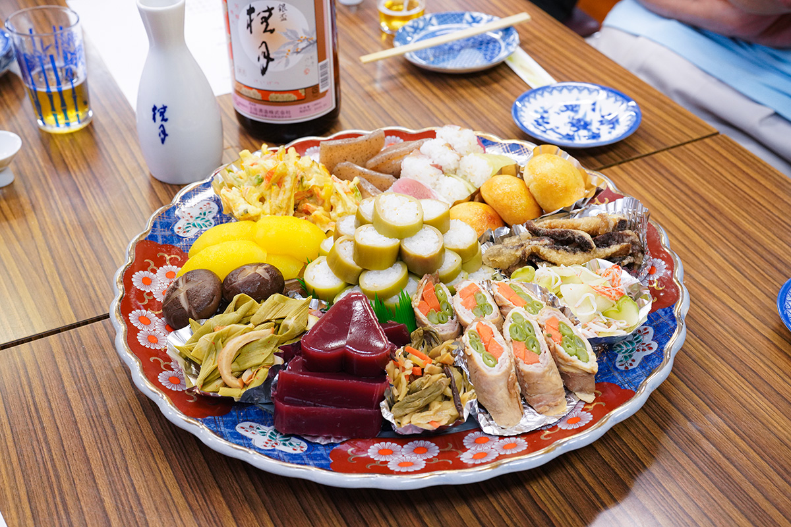
В центре можно остаться на ночь: есть семейная купальня и душевые. Программа «Исихара-но окяку» занимает день и ночь и стоит 19 800 иен: проживание, мастер-класс посуды из ароматного бамбука, застолье с сакэ «Кэйгэцу» без ограничений и завтрак, группы от 10 до 30 человек. Дневной вариант с мангалом из местной курицы стоит 4 000 иен, от 10 до 40 человек. Кроме застолья, здесь учат делать баумкухен, колоть дрова и столярничать.
Исихара-но сато
- Адрес
- префектура Коти, уезд Тоса, посёлок Тоса, Нисиисихара, 1228
- Телефон
- +81 887-72-9328 (с понедельника по пятницу, 9:00–17:00)
- Цены
- ночёвка от 4 000 иен с человека
Город
Четыре адреса окяку: от идзакай до винокурни
Камонтэй: бронь на два месяца вперёд
Идзакая «Камонтэй» недалеко от моста Харимая заполняется так плотно, что брони открывают в полночь последнего дня месяца за два месяца до визита, и за первыми минутами следят и местные, и приезжие из других префектур. Хозяин заведения оттачивал ремесло в кёотском рёкане, вернулся домой и открыл изакаю в 2008 году. Форма у него лёгкая, идзакаи, а работа тонкая.
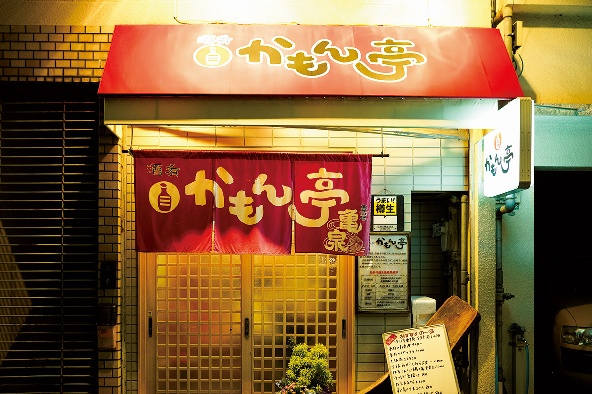
Уцубо, морскую мурену, разделывают прямо в зале и держат три дня в соли; молодого речного краба цугани толкут живьём для супа, где собирается весь вкус краба; мясо местной красной породы тоса ака-уси ловит огонь на соломенном жару. Сакэ в карте в основном тосское, и выбор доверяют хозяину: у него есть удостоверение специалиста по сакэ.
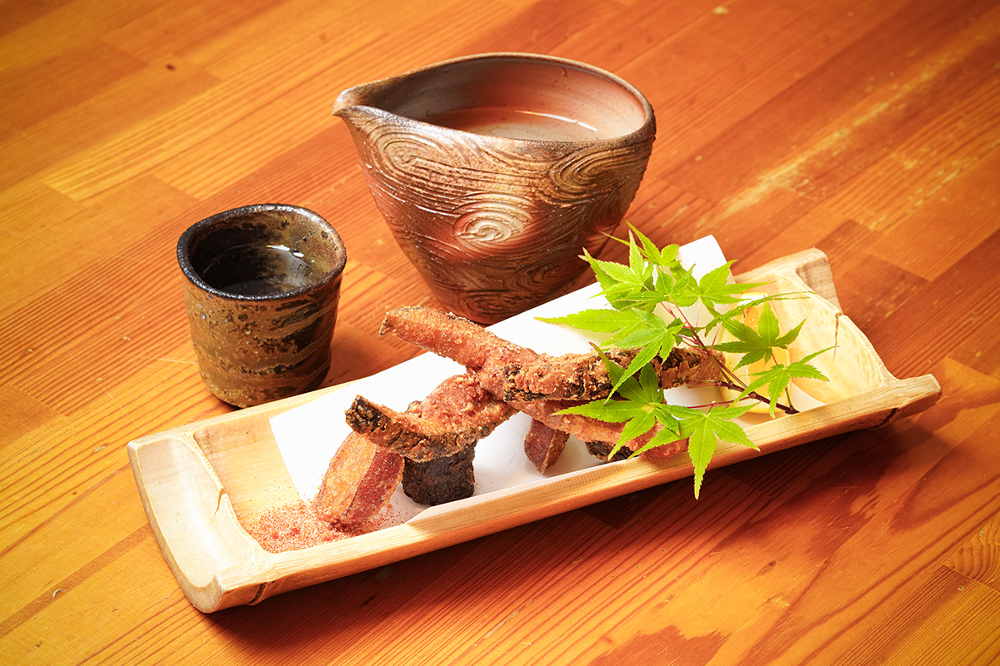
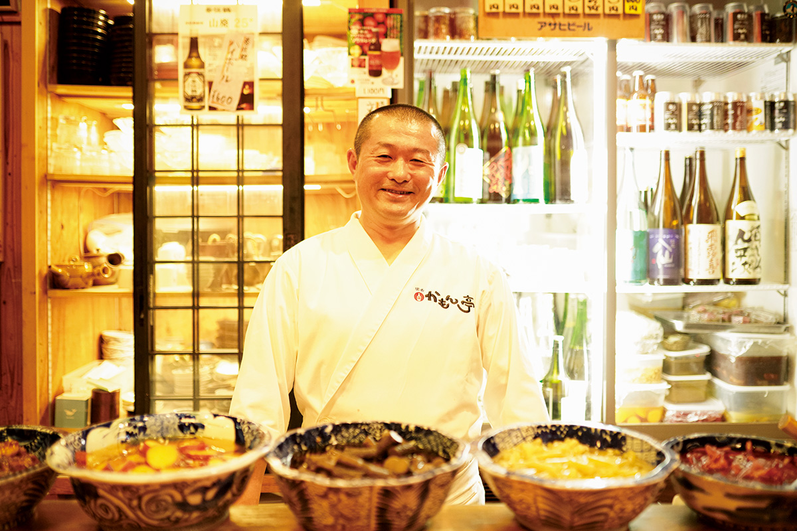
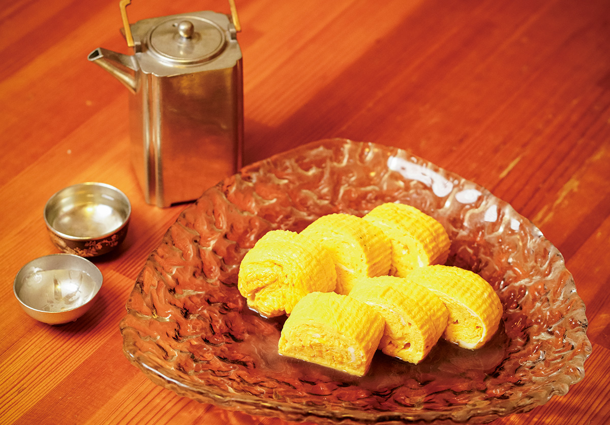
Камонтэй
- Адрес
- префектура Коти, город Коти, Харимаятё, 2-3-13
- Телефон
- +81 88-885-0855
- Часы работы
- с 18:30, пока не закончатся продукты
- Выходные
- вторник
Окякуба: маленький застольный клуб при отеле
Отель hotel nansui стоит на месте родового дома Рёмы Сакамото, и его свободное пространство «Окякуба» открыто не только постояльцам, но и горожанам. Здесь наливают крафт-пиво со всей префектуры и подают закуски из местных продуктов; застолье начинается, когда захочется, хоть с полудня. Слова «гость» и «сосед» тут легко меняются местами.
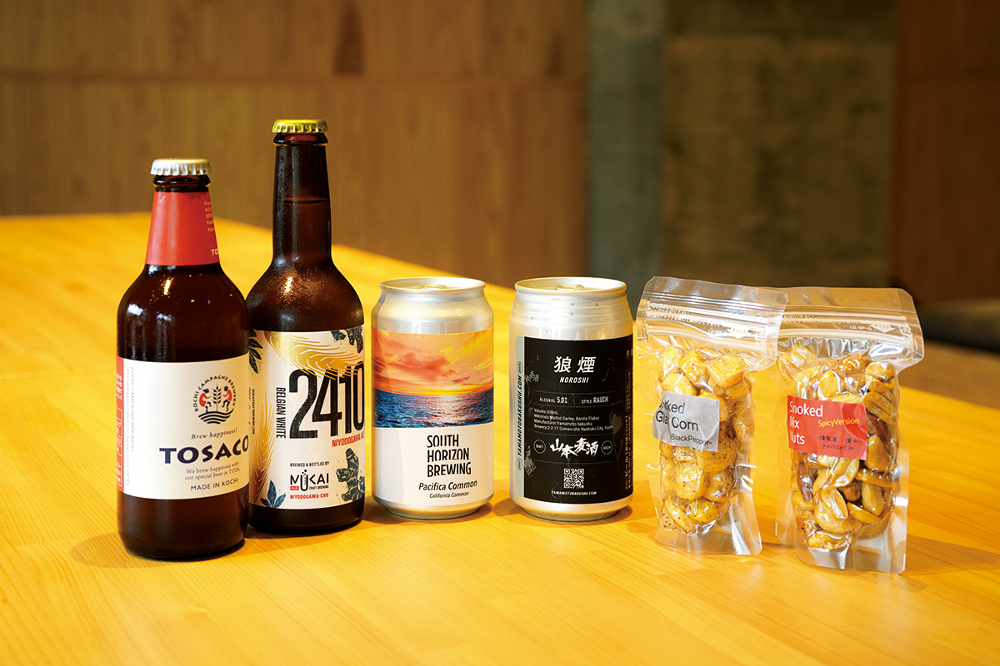
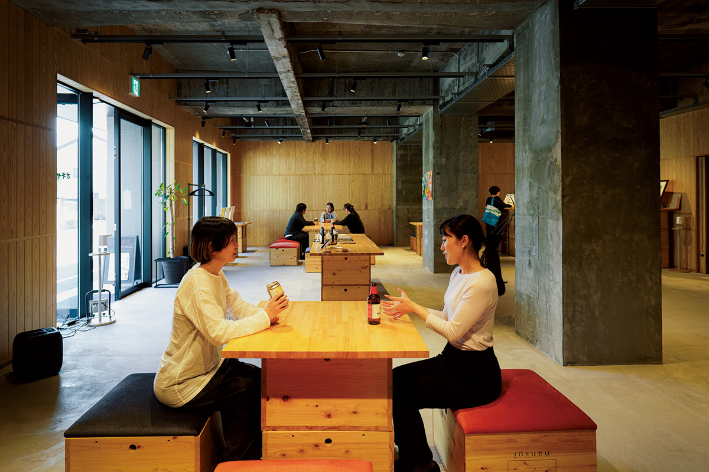
Окякуба при отеле hotel nansui
- Адрес
- префектура Коти, город Коти, Камитё, 1-7-12
- Телефон
- +81 88-821-8895
- Часы работы
- 10:00–19:30
- Выходные
- с понедельника по среду
- Сайт
- nansui.kochi.jp
Тоса-кура: винокурня для дорогого сакэ
Сакэ «Суйгэй» варит местная семейная компания, и в 2018 году она выстроила отдельную винокурню «Тоса-кура» ради дорогих линеек. Здесь, под одной крышей, зерно проходит путь от шлифовки риса до холодного хранения уже разлитых бутылок, и варят только уровни дзюммэй-гиндзё и выше. Экскурсия идёт вдоль реального процесса: в сезон варки брожение видно своими глазами, от пара до пены.
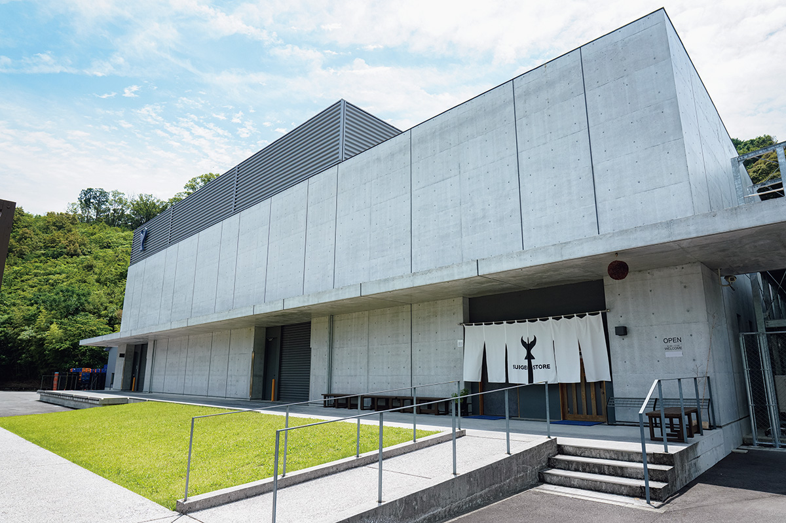
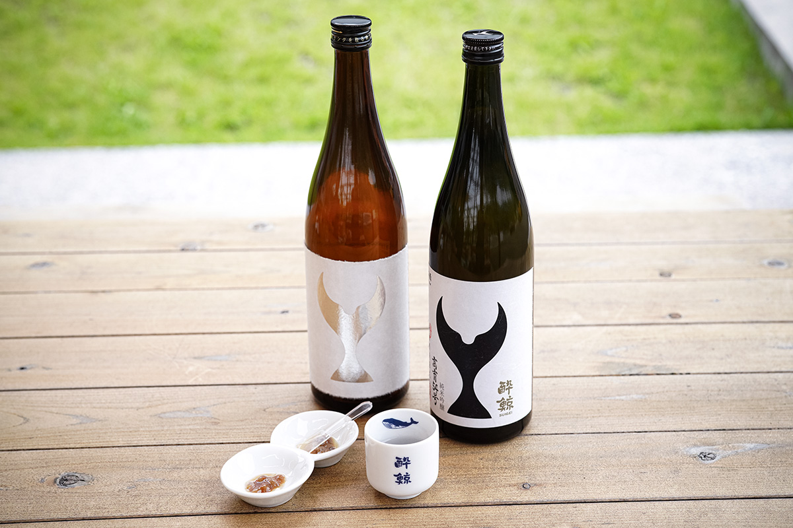
При винокурне работают магазин с сакэ, которое продаётся только здесь, и товары с китовой эмблемой, и кафе со сладким: мороженое и парфе на амадзакэ и сакэ-касу, безалкогольные.
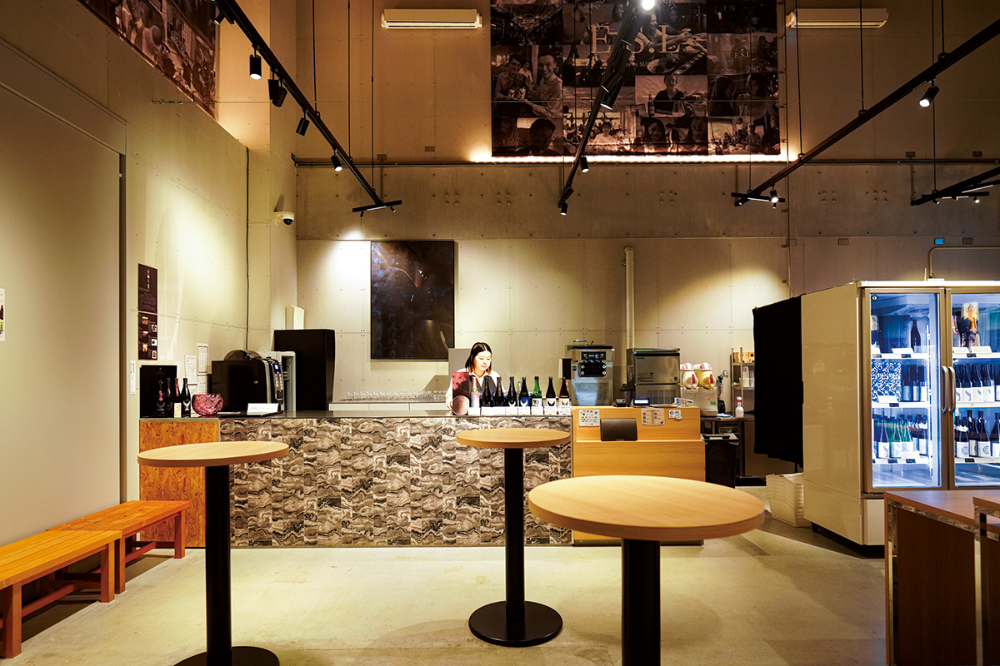
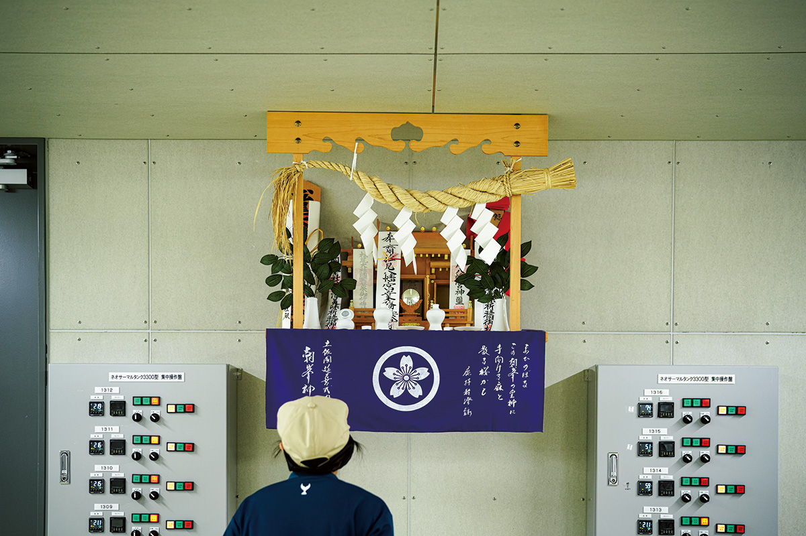
Суйгэй дзёсо «Тоса-кура»
- Адрес
- префектура Коти, город Тоса, Ковахара, 2001-1
- Телефон
- +81 88-856-8888
- Часы работы
- 10:00–17:00
- Выходные
- нет
- Цены
- экскурсия 500 иен (с дегустацией, по брони)
- Сайт
- suigei.jp
Фумимото: винокурня, начавшая заново
В посёлке Симанто, на берегу Симанто, работает винокурня 1903 года, последняя в бывшем городе Кубокава. После паузы и смены поколений в 2023 году она перезапустилась под именем «Фумимото». Тодзи, мастер-винодел, переехал сюда из другой префектуры и варит сакэ на подземных водах Симанто и местном рисе ниида, добиваясь вкуса, в котором слышен терруар.
Заметная деталь, пакеты с дозатором вместо бутылок: их завели во время дефицита стекла в пандемию, и они прижились, лёгкие, небьющиеся, сминаются и выбрасываются без сожаления. Новая линейка носит имя «Кубокава», старое название этих мест. В кафе-баре при главном доме, перестроенном из жилого, подают еду и сакэ-пейринги, а также дегустационные сеты, где можно сравнить все линейки.
Фумимото дзёсо
- Адрес
- префектура Коти, уезд Такаока, посёлок Симанто, Хонтё, 4-23
- Телефон
- +81 880-22-0039
- Часы работы
- 11:00–21:00, в понедельник до 20:00 (перерыв 14:00–17:00)
- Выходные
- вторник–четверг
- Цены
- экскурсия 5 000 иен (дегустационный сет и дзюммэй-дайгиндзё SHIMANTO)
- Сайт
- fumimoto.jp
Событие
Март, когда весь город превращается в застолье
Раз в год окяку выходит на улицы: фестиваль «Тоса-но окяку» превращает Коти в одну большую банкетную площадку. На торговых улицах и в парках стелют татами, наливают в электричке-«окяку-дэнся», устраивают концерты, танцы и представления местной культуры. В 2026 году фестиваль проходил с 7 по 15 марта; следующее, юбилейное двадцатое, заявлено на март 2027 года.
Фестиваль «Тоса-но окяку»
- Адрес
- центр города Коти: торговые улицы, парки, площадки по всему городу
- Телефон
- +81 88-823-0989 (офис фестиваля)
- Часы работы
- ежегодно в марте; в 2026 году с 7 по 15 марта
- Сайт
- tosa-okyaku.com
Фото: Адзуса Сигэнобу.